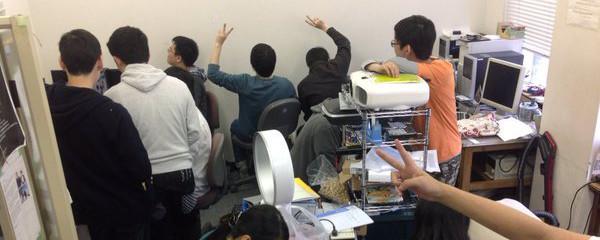

About

ようこそ
愛知工業大学公認サークル システム工学研究会のWebサイトにようこそ。
当サークルは40年以上の歴史を誇るサークルで、英名は"SystemEngineeringTeam"と言います。
愛称では「シス研」とか「S.E.T.（セット）]とか呼ばれている様です。 まったくの未経験者から、プロみたいな人まで、色々な部員が在籍しています。 もちろん、愛知工業大学に限らず、他大学からの参加も大歓迎です。 活動はパソコンばかりではなく、夜な夜なたこ焼きパーティーや遊園地などへ行ったりも。 なぜなら、私たちの「目的」が最後の学生生活を楽しみ尽くすという事だからです。 バーベキューに大学祭など、文化系か運動系かの分類は微妙かもしれません。 実際、半数近くが運動部だった人たちです。
活動
大学主体
-
build工科展シスケンでは大学祭で開催されている工科展に参加しています。
-
shopping_cart模擬店シスケンでは大学祭に模擬店を出店しています。 シスケンオリジナルな唐揚げは毎年人気です。
-
accessibility駅伝シスケンでは駅伝に参加しています。 運動部とは出場する部が分かれているので楽しく走ることが出来ます。
サークル主体
-
gradeバーベキューシスケンでは5月くらいにバーベキューをして親睦を深めます。
-
home新入生歓迎会新しく入った１年生の歓迎会です。 ここで顧問の先生や役員の説明などをします。
個人活動
-
extensionWeb勉強会Web関係を勉強したい人が集まって勉強会を開いています。
-
androidJava勉強会Javaについての勉強会です